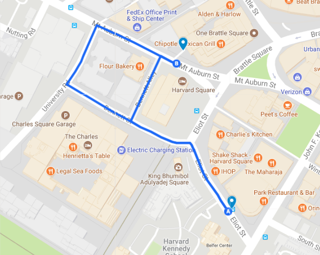
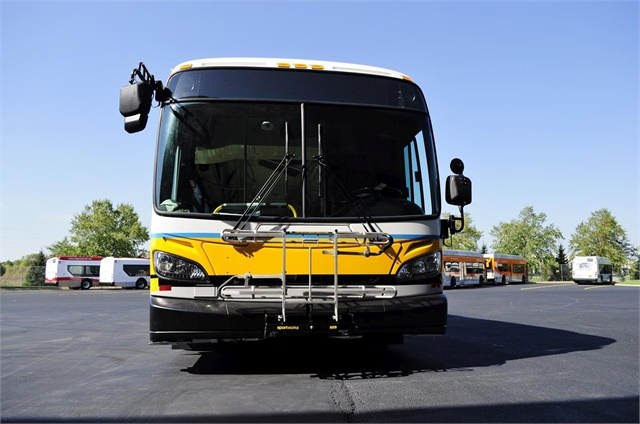

MBTA Bus Mirrors
Dec 6, 2017 · 384 words · 2 minutes read
I take the MBTA 86 bus as part of my commute in the morning. It runs from Reservoir in Brighton to Sullivan Station in Cambridge, and it stops at Harvard on the way, which is where I get off.
Right after the Eliot street stop, there are two ways for the bus to get underground to the Harvard stop. One way is to go down Bennett St., take a right on University Road, take a right on Mt. Auburn, and then take a left into the bus tunnel. The other way is to go through Bennett Alley and continue straight into the bus tunnel. This way is shorter, and it’s the preferred route of every driver I’ve ridden with.

Bennett Alley is for MBTA traffic only, and the the bus driver usually decides on the route to take based on how many buses are already in Bennett Alley. Often times, there will be one bus parked to the left and one parked to the right, and the bus driver is able to drive through the middle. If there are already three buses in the alley or one of the two is parked at an angle reducing the space left for our bus, the driver will instead take the longer route around.
If I had to guess how wide Bennett Alley is, I would say it’s just larger than 3 busses wide. When our bus goes between two others, there’s often inches to spare. One of the reasons our bus is able to make it through is because of the mirrors.
The left and right mirrors on every MBTA bus are vertically offset to allow two parallel buses to overlap their mirror space without hitting each other.

If the two buses had mirrors at the same height, and additional ~8 inches would be required on either side. This would increase the width required for three buses by ~16 inches. This doesn’t sound like much, but even a foot is often the difference between being able to drive through Bennett Alley and taking the slightly longer way around.
It’s a small design decision that saves just a bit of space. It’s not helpful in the large majority of situations, but given Boston’s often tight streets, it gives just a little more breathing room for the drivers.